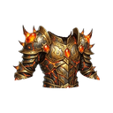
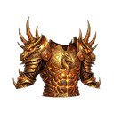

Bakır Göğüslük T1
T1Temel bakır zırh
İSTATİSTİKLER Normal +0
- Savunma +30
- Can +20
- Düşüren
- Goblin İzcisi Fısıldayan Orman
Mağara Örümceği Karanlık Mağara D1
Temel bakır zırh

Ağır demir zırh

Sert çelik zırh

Süslü gümüş göğüslük

Kraliyet altın zırhı

Yıkılmaz platin

Antik selestit zırhı

Adamantit Muhafızı

Ateşte dövülmüş obsidyen

Ebedi Ejderha Zırhı